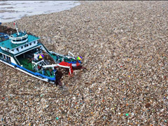

ImgSlider
说明：图片滑动切换初始化，可以添加图片标题和正文描述(2行，字段截取)，这种展示方式目的是解决在16:9或者别的宽比例区域无法展示4:3的图片的问题。可以不带正文描述或者标题。暂无api
数百僧侣风沙超度逝者
南非纪念曼德拉被释放20周年
2月11日是诺贝尔奖得主、南非前总统曼德拉出狱20周年的纪念日。当天，在当年关押曼德拉的监狱外，聚集了数千民众，他们以游行方式纪念这一重大日子。
大旱面孔·无泪的诉说
重庆重庆纂江县 安稳镇上坝村，久旱的农民望天发愁。
江苏万人考幼儿男老师 激烈程度超公务员
为期两天的江苏省2010年免费幼儿师范男生招生面试在省内三所幼师同时展开。由于免费幼儿师范生工作有保障，两天下来面试总人数预计过万，录取名额仅有300个，竞争激烈程度超过公务员。
只有一个同窗的童年
广西大化瑶族自治县岩滩镇协合村良庆屯教学点原本只有唐蕾一名二年级学生，本学期唐亿斯从外屯寄宿到良庆屯姑姑家，并到教学点读二年级。于是唐蕾有了同窗，两人很快成了形影不离的好伙伴。
平衡木上的童年
广西壮族自治区南宁市体育馆业余体校，有一名年仅7岁的小女孩名叫韦筱圆。她从小练习体育到业余体校接受专业训练，不是为了自己成名成家，想通过练体育体验到训练中的艰辛，让自己懂得老师、家长讲的“吃得苦中苦，方为人上人”的人生道理。
愤怒的表达方式
当地时间7月14日晚，以色列特拉维夫数千民众集会，纪念争取社会改革示威活动爆发一周年，抗议房价高、工资低等社会问题。期间一名年约40岁的男子突然自焚，皮肤严重烧伤送院。据了解，在以色列以自焚表达不满十分罕见。

大自然的癌症
根据水利部长江水利委员会的调查，目前三峡水库主要污染物的等标负荷百分比中，面源污染物占到60%-70%。面源污染主要来自库区及其上游的水土流失、农业生产、农村生活污染和规模化畜禽养殖污染。
湖南省长沙市望城区的旺旺包装厂一仓库发生火灾
7月16日下午6时左右，湖南省长沙市望城区的旺旺包装厂一仓库发生火灾，消防部门共调动22台消防车，154名消防官兵在现场紧急救援，仓库人员都已撤离。附近几条道路全部被封，所有行人车辆全部绕道。长沙官方透露，仓库过火面积约1500平方米，事故未造成人员伤亡。
他的眼睛，她的光明
他来到这世上，睁开眼睛，看了看，太难受，就走了。 因身患重症，出生仅9天的小振和离开人世。但他的眼角膜，却将两个盲人从黑暗世界里拯救出来，重见光明